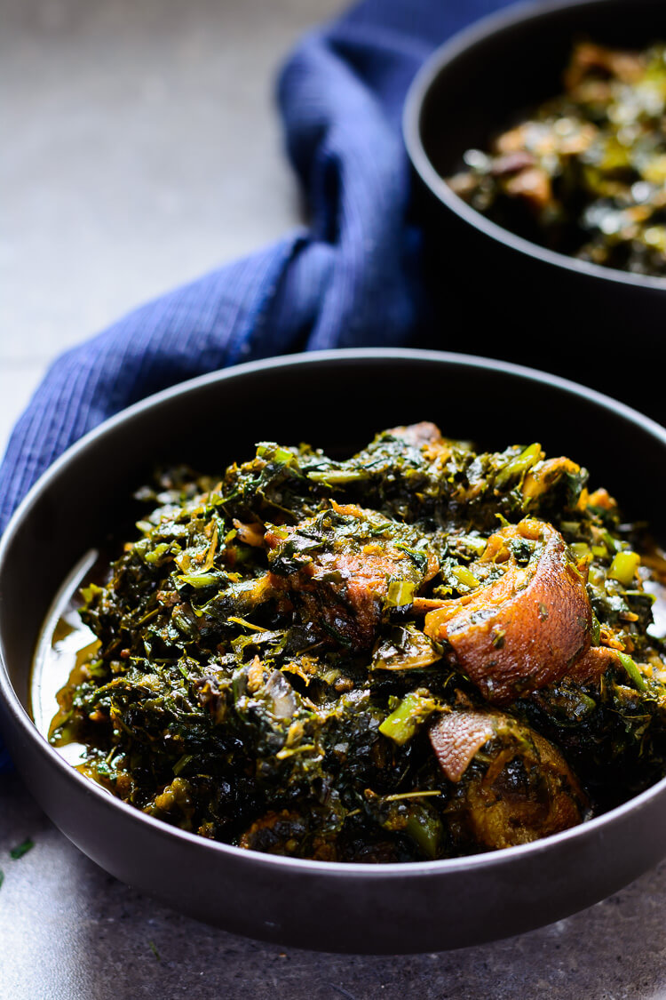

Afang

Delicious and resistable soup
This is a sumptous meal that keep people requesting for more. Afang soup, eaten by Efik and Ibibio people of Nigeria is a delicious stew made with Afang leaves and a leafy vegetable called waterleaf or malabar spinach.
It's a slippery vegetable soup loaded with chunks of multifarious meats - smoked and fresh meat, any that you can lay your hands on. The star vegetable in this soup is shredded afang leaves which is known by various names- "Ukazi" "Okazi" in Nigeria.
Ingredients
- 2 lbs Malabar Spinach aka Water leaf
- 57 g 2 oz dried Afang leaves
- 3 lbs Goat meat cut into large bite size cubes
- ½ cup of cooked shelled Apple snails
- ½ cooked shelled Clams
- ½ cup palm oil
- 2 Red onions
- 2 Scotch bonnet peppers substitute with habanero peppers
- 4 tbsp Ground smoked dried shrimp aka crayfish
- 3 tsp Chicken Bullion
- 2 tbsp cayenne pepper/ crushed red pepper flakes
- Salt to taste
Instructions
- Slice both onions and scotch bonnet peppers, and set them aside.
- On low- medium heat in a large stock pot, braise the goat meat with the one of the onions, scotch bonnet peppers, 1 tsp bullion and 1 tsp salt for 30 minutes or until the meat is tender.
- Half way into braising the goat meat, add ½ a cup of water and stir the meat to prevent in from burning. Keep the pot covered at all times during the braising process.
- While the meat is braising, wash your Malabar spinach in cool water to get rid of sand and dirt. Pick off the tough stems, but save the tender stems and leaves. Chop and set aside.
- in a food processor, roughly grind the afang leaves just to break it up a little. Afang leaves are mostly sold in the African store already shredded, but you can break it up a little more using a food processor/ mortar and pestle so the shreds are not as long.
- Once the meat is tender and is done braising. Set aside.
- In a deep pot heat up the palm oil on medium heat (be careful not to over heat the oil on high heat) and sauté the other sliced onion for 10 minutes until it is starting to get caramelized.
- Add in the snails and clams, and continue to sauté for another 5 minutes.
- Add in the braise goat meat and reserve the braising liquid. It is a very flavorful stock, and will still be used.
- Add in 2 teaspoons of bullion, crayfish, and if you are spice inclined, cayenne pepper, stir, then add in the chopped water leaf.
- Just like regular spinach, the water leaf will look like a lot at first, but wilt down in a few minutes. once the water leaf starts to wilt, add in the Afang leaves and stir.
- Add about 1 cup of the braising liquid to the stew, turn down the heat to low, and continue cooking with the pot covered for another 10 minutes.
- After 10 minutes, taste the stew for seasoning and adjust the salt if necessary.
- Turn the heat off and allow the stew to sit for 5 minutes, then serve hot
Back to Home